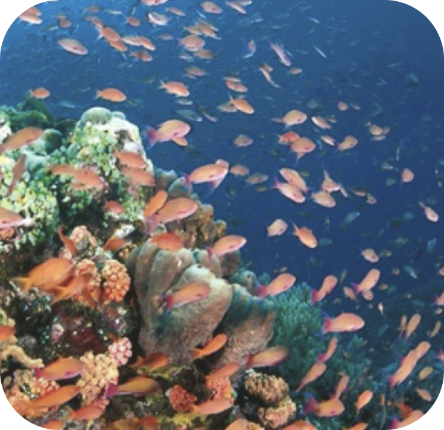

СНОРКЛИНГ НА ФИЛИППИНАХ
Филиппины известны прежде всего своими
предложениями водных видов спорта от кайтинга и виндсерфинга до каякинга, скимбординга, парасейлинга,
аквабайков, рыбалки и, особенно, дайвинга и снорка. Воды вокруг островов, с разнообразной морской жизнью
- среди лучших в стране. Красочные рыбы пытаются слиться с психоделическими кораллами, в то время как
удивительные и фантастические существа скрываются в более глубоких сайтах.

Считаемый самым лучшим местом для
снорклинга на острове, Balinghai Beach - тихий курорт рядом с Пляжем Динивид Бич (Diniwid) на каменном
склоне, с великолепными окружающими видами. Недалеко от песчаного пляжа находится хороший коралловый сад, с
обширным разнообразием морских обитателей. Намного более тихое место по сравнению с переполненным Белым
пляжем, Пляж Балингхай Бич также имеет удобные коттеджи, которые рассеяны вдоль берега, предлагая отличный
сайт для релакса после долгих часов интересного снорка в богатых водах. Пляж - также обычная остановка в
пути во время туров на лодке в Балабаг Бич, Боракай.
Пляж Пука Шелл Бич (Puka Beach)
От Белого пляжа на пляж Пука Бич - 10 минут на трицикле. Пука Шелл также предлагает относительно
хорошие снорклинг сайты с красочными рифами и маленькими рыбами, которые, как кажется, уже привыкли
к ныряльщикам, не боятся приближения. Пука Шелл Бич расположен в северной части острова.

Остров Крокодил (Crocodile Island)
Остров Крокодил (Crocodile Island) снорклинг Остров Крокодил - один из самых прекрасных мест для
снорка в Филиппинах, представляя большое разнообразие морской жизни и глубины, которые подойдут для
исследователей всех уровней снорклинга. Также обычный пункт программы экскурсионного тура на лодке,
остров Крокодила предлагает исследовать несколько привлекательных снорк-сайтов. Ныряя с маской и
трубкой Вы можете не беспокоиться о безопасности - на острове нет никаких крокодилов; фактически,
имя происходит от его формы, в которой Вы можете ясно угадать морду крокодила, рассматривая остров
на расстоянии. Вершина мелкого рифа идеальна для снорка, хотя местные эксперты по снорклингу
предупреждают о сильных течениях вокруг острова. Как с другими снорк & дайв сайтами в Боракае,
подводный мир Острова Крокодила предлагает удивительное разнонобразие рыбы и других обитателей
красочной морской жизни, включая беспозвоночных в коротком расстоянии от пляжа.

Снорклинг в Live Coral beds
На южной оконечности Белого Пляжа, мимо пляжных камней находится большой здоровый коралловый риф, с
бесчисленным разнообразием живых кораллов всевозможных видов, форм и размеров, в том числе многих
примеров красочных кораллов Бранин. Коралловый шель выступает над водой во время отлива.